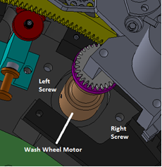
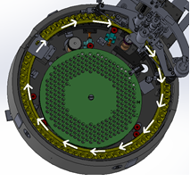
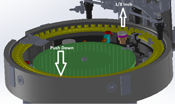

Aligning the Wash Carousel / Wheel Motor
This procedure describes how to align the wash carousel or wheel motor.
Aligning the wash carousel or wheel motor when:
- System Check fails (especially unwashed portion)
- Intermittent wash carousel or wheel motion errors
- Disable power to motor.
-
Loosen left and right wash wheel motor mounting screws just enough to move motor away from wash wheel.
Caution: Do not remove the motor screws.

-
Rotate wash wheel two revolutions to allow wheel to settle on to turcite bearings.

- Lightly push wash wheel motor gear against wash wheel gear teeth.
-
Tighten wash wheel mounting screws.
-
Tighten right mounting screw first and then left screw.
Caution: If left screw tightened first, motor can rotate away from wash wheel.
-
Tighten right mounting screw first and then left screw.
- Rotate the wash wheel two complete revolutions to allow it to settle on the turcite bearings.
-
Perform 5 times.
-
Push down on the wash wheel opposite from motor position. The wash wheel at the motor gear will lift up 1/8" .

- Remove pressure and allow the wash wheel to drop back down. The wash wheel should drop with a clunking noise.
-
Rotate the wash wheel clockwise 10 positions. Repeat steps a-b.
- If wash wheel does not fully drop back on to turcite bearings, loosen left motor mounting screw and allow wash wheel to rest on turcite bearing. Re-tighten mounting screw. Repeat steps a-b.
-
Push down on the wash wheel opposite from motor position. The wash wheel at the motor gear will lift up 1/8" .
- Enable power to the motor.
- Perform the following alignments called out in the DxI service manual:
-
Verify system operation.
-
Perform system verification as stated in the Verification of Service Repair document.
Refer to VSR: Analytical Module document.
-
Perform system verification as stated in the Verification of Service Repair document.